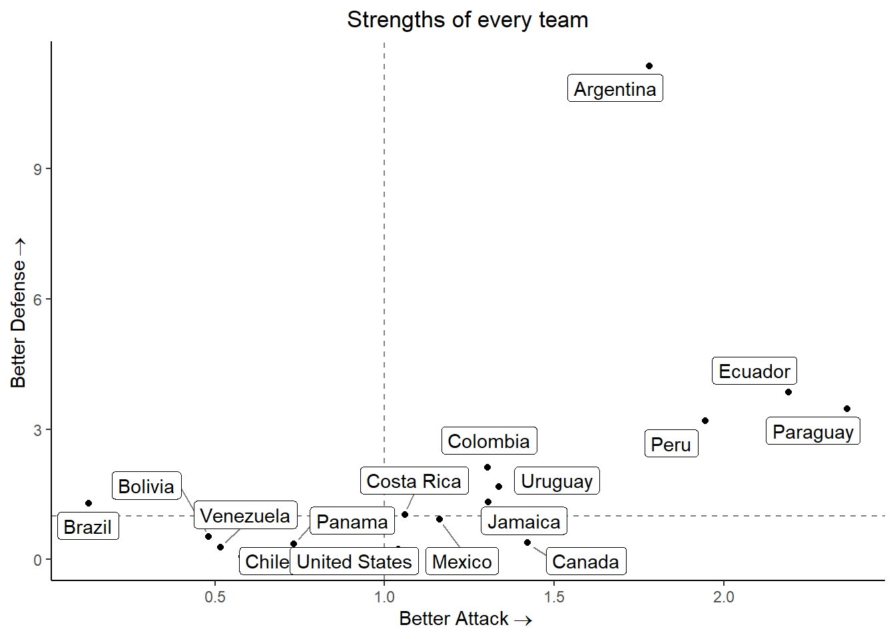

require(rstanarm)
require(rstantools)
require(bayesplot)Predicting Copa América - 2024
In this project, I will propose a model to predict the scores in the Euro 2024.
Packages
I will use a Bayesian model, so we need the following libraries
As well as
require(readr)
require(dplyr)
require(lubridate)
require(ggplot2)
require(ggrepel)
require(latex2exp)Data
The data is contained in this repository https://github.com/martj42/international_results.
urlfile = "https://raw.githubusercontent.com/martj42/international_results/master/results.csv"We load the data
data <- read_csv(url(urlfile), show_col_types = FALSE)The proposed model is based on the teams’ strengths attacking and defending. Therefore, we will consider only the games played during 2024. An improved model would be one with dynamic strengths.
america_2024 = c('Argentina', 'Chile', 'Peru', 'Canada', 'Mexico', 'Ecuador', 'Venezuela', 'Jamaica', 'United States', 'Uruguay', 'Panama', 'Bolivia', 'Brazil', 'Colombia', 'Paraguay', 'Costa Rica')
scores <- data %>%
filter(home_team %in% america_2024 & away_team %in% america_2024) %>%
filter(date > "2023-01-01") %>%
mutate(id = row_number())For example, we consider the following games played by Portugal
scores %>%
filter(home_team == "Colombia" | away_team == "Colombia")# A tibble: 13 × 10
date home_team away_team home_score away_score tournament city country
<date> <chr> <chr> <dbl> <dbl> <chr> <chr> <chr>
1 2023-01-28 United S… Colombia 0 0 Friendly Cars… United…
2 2023-09-07 Colombia Venezuela 1 0 FIFA Worl… Barr… Colomb…
3 2023-09-12 Chile Colombia 0 0 FIFA Worl… Sant… Chile
4 2023-10-12 Colombia Uruguay 2 2 FIFA Worl… Barr… Colomb…
5 2023-10-17 Ecuador Colombia 0 0 FIFA Worl… Quito Ecuador
6 2023-11-16 Colombia Brazil 2 1 FIFA Worl… Barr… Colomb…
7 2023-11-21 Paraguay Colombia 0 1 FIFA Worl… Asun… Paragu…
8 2023-12-16 Mexico Colombia 2 3 Friendly Los … United…
9 2024-06-08 United S… Colombia 1 5 Friendly Land… United…
10 2024-06-15 Colombia Bolivia 3 0 Friendly Denv… United…
11 2024-06-24 Colombia Paraguay NA NA Copa Amér… Hous… United…
12 2024-06-28 Colombia Costa Ri… NA NA Copa Amér… Glen… United…
13 2024-07-02 Brazil Colombia NA NA Copa Amér… Sant… United…
# ℹ 2 more variables: neutral <lgl>, id <int>home_scores <- scores %>%
select(id, score = home_score, team = home_team, adversary = away_team, date = date) %>%
mutate(condition = ifelse(scores$neutral, "neutral", "home"))
away_scores <- scores %>%
select(id, score = away_score, team = away_team, adversary = home_team, date = date) %>%
mutate(condition = ifelse(scores$neutral, "neutral", "away"))
total_scores <- union_all(home_scores, away_scores)We also consider the ranking FIFA of the teams as covariate. For every game, select the up-to-date ranking
path0 <- "https://raw.githubusercontent.com/Dato-Futbol/fifa-ranking/master/ranking_fifa_historical.csv"
rank <- read_csv(url(path0), show_col_types = FALSE)
rank <- rank %>%
select(team, total_points, date) %>%
group_by(date) %>%
mutate(ranking = rank(-total_points), team = recode(team, 'USA'='United States'))total_scores <- total_scores %>%
left_join(rank, by = join_by(adversary == team), relationship = "many-to-many") %>%
filter(date.x >= date.y) %>%
mutate(diff_date = date.x - date.y) %>%
group_by(id, team) %>%
slice_min(diff_date) %>%
select(id, score, team, adversary, condition, date_game = date.x, ranking_adv = ranking, date_rank = date.y)
train <- total_scores %>%
filter(date_game <= today())
test <- total_scores %>%
filter(date_game > today())Fitting the model
To fit the model I would consider the scores Neg. Binomial distributed for simplicity, one better option is the Conway-Maxwell-Poisson. However, we will use a simple model for computational reasons.
model <- stan_glm(score ~ 1 + team + adversary + condition + ranking_adv, data = train, family = poisson, iter = 5000, contrasts = list(team = "contr.sum", adversary = "contr.sum"))Estimated Parameters
n <- length(america_2024)
strength_att <- model$coefficients[2:n]
strength_att <- c(strength_att, 0 - sum(strength_att))
strength_def <- model$coefficients[(n+1):(2*n-1)]
strength_def <- c(strength_def, 0 - sum(strength_def))
coeffs <- data.frame(team = america_2024, strength_att, strength_def, row.names = c())Now, we can plot the estimated strengths in the following way:
ggplot(coeffs, aes(x = exp(strength_att), y = exp(-strength_def))) +
geom_hline(yintercept = 1, linetype = "dashed", color = "grey50") +
geom_vline(xintercept = 1, linetype = "dashed", color = "grey50") +
geom_point() +
geom_label_repel(aes(label = team),
box.padding = 0.25,
point.padding = 0.5,
segment.color = "grey50") +
xlab(expression("Better Attack" %->% "")) +
ylab(expression("Better Defense" %->% "")) +
ggtitle("Strengths of every team") +
theme_classic() +
theme(plot.title = element_text(hjust = 0.5))
This graph provides an intuition into the strengths and abilities of every team. Teams located in the origin have an overall performance, and below the axis are worse than the averages’ team.
Now, we predict the scores of the future games:
test_pred <- test %>%
select(id, team, adversary, condition, ranking_adv)
predictions <- posterior_predict(model, newdata = test_pred)
mean_goals <- apply(predictions, 2, mean)
test_pred <- test_pred %>%
ungroup() %>%
mutate(goals = mean_goals) %>%
group_by(id) %>%
summarise("Team 1" = first(team),
"Exp. Goals" = first(goals),
"Team 2" = last(team),
"Exp. Goals 2" = last(goals)) Therefore the predictions of future games are:
Predictions
test_pred %>%
print(n = 1e3)# A tibble: 16 × 5
id `Team 1` `Exp. Goals` `Team 2` `Exp. Goals 2`
<int> <chr> <dbl> <chr> <dbl>
1 82 Canada 1.07 Peru 0.209
2 83 Argentina 1.17 Chile 0.351
3 84 Ecuador 1.94 Jamaica 0.740
4 85 Mexico 0.594 Venezuela 1.68
5 86 Panama 0.570 United States 2.28
6 87 Bolivia 0.318 Uruguay 3.32
7 88 Colombia 3.10 Costa Rica 0.297
8 89 Brazil 1.33 Paraguay 0.435
9 90 Argentina 1.24 Peru 0.0524
10 91 Canada 1.02 Chile 1.44
11 92 Ecuador 1.38 Mexico 0.912
12 93 Jamaica 0.489 Venezuela 2.38
13 94 United States 0.827 Uruguay 1.80
14 95 Bolivia 0.855 Panama 1.06
15 96 Brazil 1.02 Colombia 1.76
16 97 Costa Rica 0.375 Paraguay 0.744